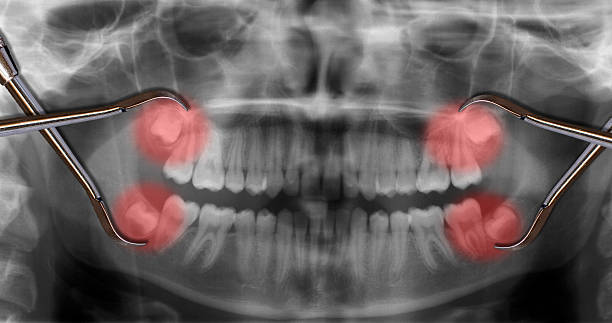

Wisdom teeth removal in Clarenville
Wisdom teeth that are impacted, partially erupted, or causing repeat infections rarely resolve on their own. A straightforward assessment confirms whether removal is the right step — and catching problems early almost always makes the procedure simpler.
Signs your wisdom teeth may need attention
Wisdom teeth do not always require removal, but when they are impacted, partially erupted, or causing repeat infections, the situation rarely improves without treatment.
An X-ray and clinical exam are the only reliable way to know whether your wisdom teeth need to come out. If the assessment finds no problem, nothing needs to happen. If it finds an issue, you will understand exactly what it is and what the options are.
- Pain or pressure in the back of the mouth
- Swelling or tenderness in the jaw
- Repeated infections around the back tooth
- Difficulty cleaning the area properly
- Crowding of adjacent teeth

Recovery is usually faster than expected
Wisdom tooth removal is done under local anaesthesia. Depending on how the teeth are positioned, the procedure can take anywhere from a few minutes to slightly longer for more complex extractions.
Most patients feel significantly better within three to five days. Swelling peaks around day two and gradually reduces. Following post-procedure instructions closely — especially during the first 24 hours — has the most impact on how smoothly recovery goes.
Earlier assessment leads to simpler treatment — almost without exception.
Wisdom teeth removed in the late teens or early twenties typically involve shorter procedures and faster recovery than when removal is delayed until problems become severe. If you have been experiencing back-tooth pain or recurring swelling, it is worth getting checked.